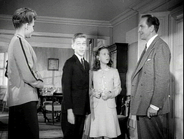

| Tomorrow the
World/B,D |
| Image/1944/82/FS
1.33/BW |
Though Tomorrow the World is adapted from a Broadway play, it fits
comfortably into the canon of World World II propaganda films. Often pedantic, one must remember
when the film was made and the effort that was going in to informing the public about Nazi Germany.
Lots of the exposition is meant to expose the fallacy of the German propaganda machine. Still, it's
an interesting situation, taking a young German boy directly from the Third Reich and plopping him
down in small town America.
 |
| A big American welcome for Emil. ©Image |
The Frame household is a loving American family. Michael, the single
father, is a chemistry professor working on important research for the war department. Pat is his
ten year old daughter, a charming sample of a "small town Miss." Lee Richards,
Pat's school teacher, is in love with Michael and they plan to marry. Michael's maiden sister
Jessie presides protectively over the household. Emil, Michael's nephew by his sister, is brought
over from Germany into this rather wonderful household. He's like a bomb dropping on the Norman
Rockwell town.
The material does manage to deliver some emotional charge. Emil is such a
despicable character and gets under everyone's skin so thoroughly that you can't help hoping he
gets what he deserves. Yet, when the adults lose patience, it's still unsettling..
The cast is solid, indeed. Fredric March stays on solid ground as Michael. Betty
Field handles a difficult role as Lee very well. Young Joan Carroll is charming as Peg. But the
spotlight really focuses on Skip Homeier making his screen debut. Homeier's often stiff
melodramatic posturing suits the German Emil quite well. It's a frightening portrait. I kept
thinking about the manipulative Patty McCormack in The Bad Seed, a film about an evil child
a decade later. But this film is not about a bad seed, but about the web of horror spun by the
Nazis. Emil is just another bug caught up in the fervor for the Fuehrer.
The DVD suffers from a jumpy focus. It frequently pulses in and out of
sharpness. The backgrounds are especially unstable. There's plenty of dirt and other damage to mar
the presentation. On the positive side, contrast is strong and black are solid. The soundtrack is
rather thin and slightly distorted. Still, dialogue is clear, though there is some slight wow and
flutter of the music. It was not an easy decision for me to continue watching this DVD given the
focus situation, but overall I am glad I did.
|
|
|
|

The
Movie Poster Archive include extensive poster images from the films of stars like Susan Hayward,
Kirk Douglas, Katharine Hepburn and many more. Our featured star is Clark Gable.

Selections from the Feature Archive
include articles on Akira Kurosawa, Frank
Darabont, Blonde Bimbos, Hollywood Street Gangs, or Vietnam: The
Hollywood Pariah, and many more....

Watching Movies or Watching Video
Don't lose sight of why you bought that DVD in the first place.

 Have you visited Home Theater
Talk lately? One of the friendliest places on the Net for Home Theater and DVD discussion, you
can get help for installation problems or simply share your opinions with other Vidiots. Have you visited Home Theater
Talk lately? One of the friendliest places on the Net for Home Theater and DVD discussion, you
can get help for installation problems or simply share your opinions with other Vidiots.
 Brad Lang continues to add more interesting material to the extensive
collection at Classic
Movies. Everything from actors and actress to your favorite directors is
linked at the site. Brad Lang continues to add more interesting material to the extensive
collection at Classic
Movies. Everything from actors and actress to your favorite directors is
linked at the site.

Doug Pratt's been doing almost longer than anyone in the business, reviewing laser discs, that is,
and now DVDs too. The venerable Laserdisc Newsletter has been publishing since 1984. Pratt probably
has a large enough stock of laser discs in his house to build a DVD-proof bomb shelter. Check out
his on-line reviews at DVDlaser.com.

An on-line Home Theater magazine with excellent hardware reviews,
including thorough and responsible research. Check it out.
|